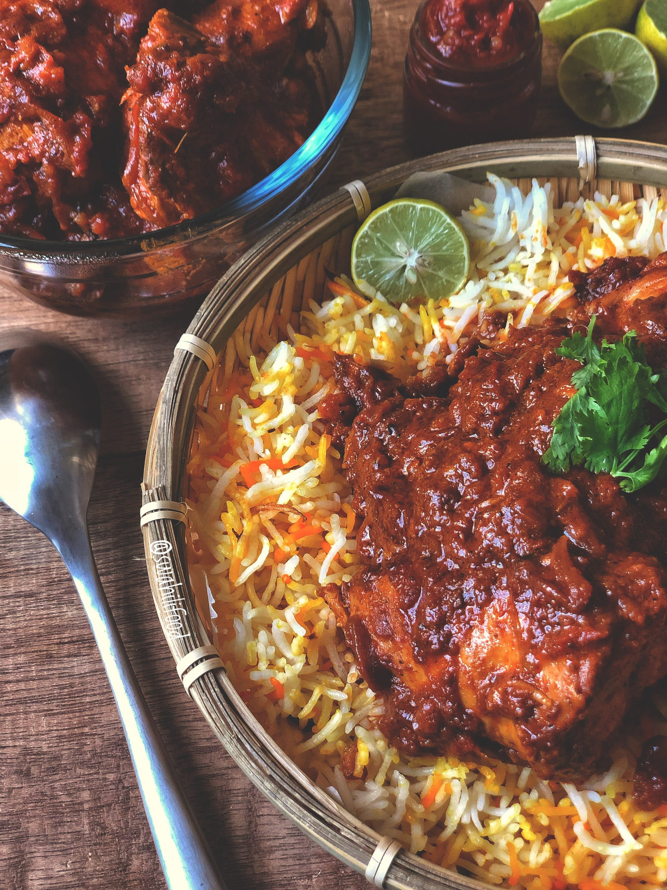
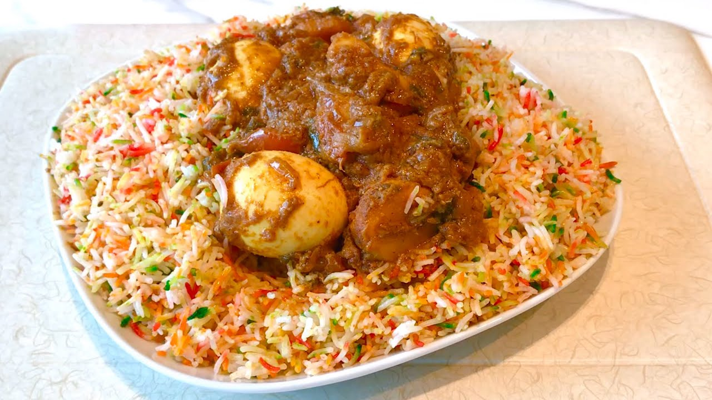

Biriyani


This fragrant and flavorful Indian dish is perfect for a special occasion or a cozy night in. The combination of aromatic spices, tender lamb, and fluffy rice creates a delicious and comforting meal.
Ingredients
for 6 servings
- 2 cups basmati rice
- 3 cups water, plus 3 tbsp, divided
- 1 medium white onion, chopped, plus 2 thinly sliced, divided
- 5 tablespoons slivered almonds, divided
- 4 cloves garlic, chopped
- 1 ginger, 1 inch (2 cm) peeled and coarsely chopped
- 6 tablespoons vegetable oil
- 3 tablespoons golden raisin
- 1 ½ lb boneless lamb shoulder, cut into chunks
- 1 ¼ teaspoons salt, plus an additional 1 1/2 tbsp, divided
- 1 cup plain yogurt
- 1 teaspoon saffron thread
- 2 tablespoons milk
- 1 cinnamon stick, 1 inch (2 cm)
- 5 cloves
- ½ teaspoon black peppercorn
- ½ teaspoon cardamom seeds, removed from pods
- 1 teaspoon coriander seed
- 1 teaspoon cumin seeds
- 1 teaspoon nutmeg
- ¼ teaspoon cayenne pepper
- ½ lemon, juiced
- 2 tablespoons unsalted butter, cut into 8 pieces
- 3 eggs, hard boiled, peeled and halved, for garnish
- 3 tablespoons fresh cilantro, chopped, for garnish
preparation
- Soak the rice in 2 cups (480 ml) of water for about 2 hours.
- Add the chopped onion, 2 tablespoons slivered almonds, garlic, ginger, and 3 tablespoons of water to a food processor. Blend into a paste.
- Heat the oil in a large nonstick pan over medium heat. Add the sliced onions and fry until browned and crisp, about 10 minutes. Remove from the pan with a slotted spoon and drain on paper towels.
- Add the raisins to the pan. Stir until they become plump, about 2 minutes, then remove and drain on paper towels.
- Add the lamb to the pan, in batches if necessary, and brown on all sides, about 5 minutes. Transfer the browned meat to a bowl and set aside.
- Reduce the heat to medium. Add the onion paste to the pan. Cook, stirring constantly, until the paste turns light brown. If it sticks to the bottom of the pan, add a bit of water and keep stirring.
- Return the meat and any accumulated juices to the pan. Add 1¼ teaspoons of salt, the yogurt, and 1 cup (240 ml) of water. Cover, reduce the heat to low, and simmer for 30 minutes.
- Add the saffron threads to a small bowl with the milk and set aside.
- Bring a large pot of water to boil and add 1½ tablespoons of salt. Drain the rice and add to pot. Boil for 5 minutes, then immediately drain and rinse.
- In a spice grinder or mortar and pestle, finely grind the cinnamon stick, cloves, peppercorns, cardamon, coriander, and cumin.
- Add the spices to the meat, along with the nutmeg and cayenne. Cover and continue cooking until the meat is tender, about 10 minutes. If there is too much sauce, increase the heat to high, uncover, and stir to evaporate some of the liquid (there should about 1 cup (240 g) of sauce left in the meat).
- Preheat the oven to 300˚F (150˚C).
- In a large Dutch oven or deep casserole dish, layer half of the rice, the meat with its sauce, and the rest of the rice. Squeeze the lemon juice over rice.
- Using the end of a wooden spoon, poke holes all the way through the layers. Spoon a bit of the saffron and milk into each hole.
- Distribute the butter over the rice and sprinkle over most of the fried onions, reserving some for garnish. Cover the dish with foil, then top with a lid.
- Bake for 1 hour.
- Remove the biriyani from the oven and set aside for at least 15 minutes.
- Garnish with the eggs, raisins, remaining 3 tablespoons of slivered almonds, reserved fried onions, and cilantro.
- Enjoy!